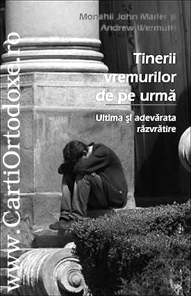

Este anevoios a urmări drumul acestor mărturisitori eroi ai neamului nostru pentru că conșiința în luptă cu diavolul este binecuvântată numai unora. Că este anevoios drumul ne încurajează și Sf. Ioan Gură de Aur în Liturghier într-o rugăciune de la vecernie: „și să ne izbăvești de cei ce ne vânează sufletele noastre”.
Dacă au fost profeți pe tot parcursul creștinismului nostru biblic, în zilele noastre se încheie cu cei mai apropiați profeți ai vieții noastre creștin ortodoxe.
Dovada că poporul nostru român e un model pentru istoria bătrânului continent european, că a rămas singur pe verticală la ora aceasta față de celelalte popoare ortodoxe din jurul nostru, dovedinid aceasta prin raidul sălbatic asupra generației din 1948, din care în câteva ore au arestat mai mult de 15000 de tineri din centrele noastre universitare din întreaga țară.
Mulțimea anilor din închisoarea Aidului se ridică la 200000 de ani. Acești mărturisitori ai neamului nostru ar fi cei mai apropiați și aleși de Dumnezeu ca din cerul Bisericii noastre triumfătoare să mărturisească prin osemintele lor preaslăvite din închisoarea Aiudului.
Operele lor, a Părintelui Nicolae Grebenea, Dumitru Bordeianu, a Părintelui Liviu Brânzaș, Virgil Maxim, mărturia aceasta despre pătimirile lui Valeriu Negulescu, ca și cea mai valoroasă dintre ele: cântarea suferințelor Sfântului închisorilor Valeriu Gafencu, rămân ca un strigăt permanent pentru urmași: „Să stăm bine, să stăm cu frică, să luăm aminte...”.
A fost grea lupta de până acum, însă de data aceasta pecețile apocaliptice parcă au fost dezlegate și puterea satanizării lumii pare de neînvins, dar: „nu te teme turmă mică, precum M-au prigonit pe mine și pe voi vă vor prigoni”.
„Îndrăzniți, Eu am biruit lumea!”
AMIN
Arhimandrit Justin Pîrvu, Starețul Mănăstirii Sfinții Arhangheli Mihail și Gavriil, Petru Vodă.
(29 aprilie 2009, Sf. 9 Mucenici din Cizic, Cuviosul Memnon făcătorul de minuni)
„Tinerii vremurilor de pe urmă”, reeditată în 2008 la editura Sophia, este o carte scrisă de doi monahi care au experimentat modele anticulturalismului american, au murit și au fost înviați de Hristos. După înviere au înființat un local, „Monk’s Rock”, unde tinerii răzvrătiți, în special punk-eri, l-au redescoperit pe Hristos.
Autorii fac un istoric al curentelor anticulturaliste americane care promițând decondiționarea, eliberarea eului, i-au aruncat pe adolescenti în ghearele sexului, drogurilor și violentei. Mai întâi a fost părintele nihilismului european, Friedrich Nietzsche, care a decretat că nu există adevăr absolut. Altfel spus, că oamenii l-au ucis pe Dumnezeu în inimile lor. Şi dacă nu există Dumnezeu atunci, vorba lui Ivan Karamazov, totul este permis. Cu toate acestea, sufletul omului simte nevoia unei contopiri cu Infinitul care l-a creat și care a sădit în el aspirația spre infinit. De această nevoie de absolut au profitat modele anticulturaliste: beatnik-șii, rock’n’roll-ul, mișcarea hippie, punk-ul, grunge-ul, rap-ul, heavy-metal-ul, Marilyn Manson ș.a.m.d..
Adevărata răzvrătire împotriva materialismului lumii și a nihilismului în care trăim rămâne religia iubirii, creștinismul. „Tinerii vremurilor” ar trebui citită în paralel cu „Nihilismul –Rădăcinile revoluției în epoca modernă” de Seraphim Rose. Sunt scrise în același duh și se completeaza una pe cealaltă. „Nihilismul” este o carte teoretică foarte bine argumentată, iar „Tinerii vremurilor din urmă” aduce multe mărturii ale celor care au experiat anticulturalismul nihilist american.
Un fost punk-er face o mărturisire minunată. O redau în întregime pentru că ne revelează ceva: Dumnezeu îl caută și îl găsește pe tot omul care Îl caută sincer. Dar nu dă năvală peste el. Stă la ușa inimii, bate și așteaptă.
„Aveam o lume a mea în care trăiam, cu propriile mele fantezii și realități., pe care eu însumi mi-o creasem. Am ajuns dintru-un puști normal, un punk-er cu mohawk albastru și bocanci.
Datorită temperamentului meu am fost înjunghiat, bătut și împușcat. Într-o zi, un prieten de-al meu m-a invitat la o petrecere mai aleasă. La petrecere erau câțiva prieteni de școală și două femei în vârsta. Părea că e o petrecere la care prietenii discută, beau apă minerală, mănâncă chipsuri și se amuză cu diverse jocuri. În realitate, cele două femei erau vrăjitoare, iar petrecerea era pentru un ritual de inițiere.Atunci a urmat inițierea mea în practica Wicca. Wicca e o formă străveche de practicare, de către femei, a magiei druidice. De aceea am spus vrăjitoare și nu vraci. De atunci am progresat repede, ajungând și eu vrăjitor practicant. Mintea îmi intrase într-un soi ciudat de delir și demență. Era limpede că nebunia va fi ultima experiență. Dacă mori, totul s-a terminat; dacă înnebunești, trăiești moartea fără să fi murit- asta îmi era filosofia! Mi-am dat silință zi și noapte pentru ea. Practica vrăjitoriei m-a dus la cunoașterea multor lucruri noi și necunoscute, mai cu seamă prin experiența călătoriei astrale- era o extindere firească a lumii mele fanteziste. Eram atotputernic și tot ceea ce aparținea lumii acesteia create de imaginația mea mi se închina ca unui stăpân. Sentimentul atotputerniciei te îndemna să continui practica vrăjitorească. În lumea reală eram un nimeni, în schimb, datorită vrăjitoriei, mă simțeam cineva, eram de nebiruit.
Într-o noapte, o acută nevoie de a merge la toaletă m-a trezit din somn. Stăteam în pat și priveam când la ceas, când la ușa și nu mă hotăram dacă să mă ridic sau să resist până dimineața fără a uda cearșaful.M-am decis totuși să mă ridic și să merg la toaletă În clipa aceea mi-am dat seama că trupul mi-e paralizat de la gât în jos. În practica Wicca nu se folosesc nici droguri, nici alcool. Dacă se afla că ai consumat așa ceva, ești expulzat din grup.
Eu știam că nu utilizasem nimic de acest fel care ar fi putut să-mi provoace acea stare. Singura explicație posibilă era că sunt imobilizat de o forță de natură spirituală. Deodată am simțit că părăsesc trupul și m-am văzut deasupra lui. Apoi, am rămas pur și simplu șocat. În jurul meu erau vreo cincisprezece demoni care râdeau isteric și care aveau putere asupra mea. Unul dintre ei s-a intors către mine, m-a privit și mi-a vorbit. Spunea că sunt cel mai mare idiot pe care l-a cunoscut vreodată. Mi-a mai spus că deși fusesem crescut și îndrumat pe calea cea bună, o alesesem pe cea rea și că am înaintat atât de mult în rău, încât nu mai am nici o scăpare și o să mă duc în iad. A încercat apoi să-mi propună un târg, după care au venit alți doi dintre ei la corpul meu astral și m-au luat. Şi, luat fiind, mă aflam deja în iad. Nici nu am cuvinte să descriu ce lucruri îngozitoare am văzut, am simtit și am mirosit. Nu voi uita niciodată aceasta… Fețele lor…
Am fost readus apoi în camera mea și mi-au dat un ultimatum. Trebuia să mă sinucid și să devin ca ei: să chinuiesc în loc să fiu chinuit sau să mor și să merg în iad oricum. Am ales sinuciderea. Înainte de a-mi da voie să mă întorc în trup, am rostit în șoaptă: „Iisuse, dacă exiști, ajută-mă!”. În clipa aceea am văzut o lumină orbitor de strălucitoare, iar ei plecaseră. Stăteam treaz și am început să-L ocărăsc pe Dumnezeu: de ce mă lăsase să trec prin toate acestea? Timp de o oră. L-am tot ocărât, curățind vărsătura care ieșise din mine în timpul acelei viziuni. Am auzit atunci, pentru prima dată în viața mea, glasul lui Dumnezeu. Mi-a spus numai o singură frază, care a pus capăt rătăcirii mele: „Tot ce doream de la tine era să ceri”.
Ciprian VOICILĂ
